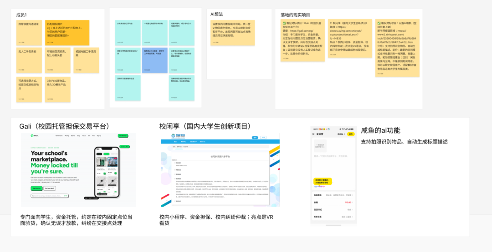
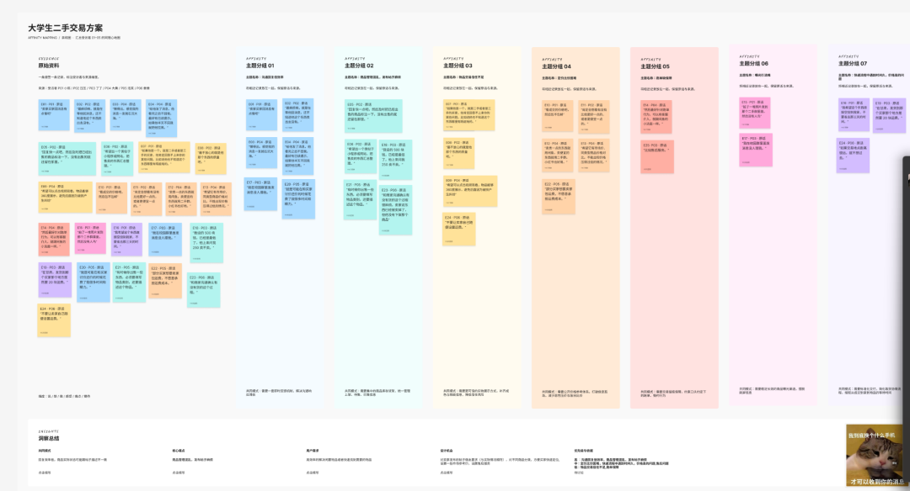
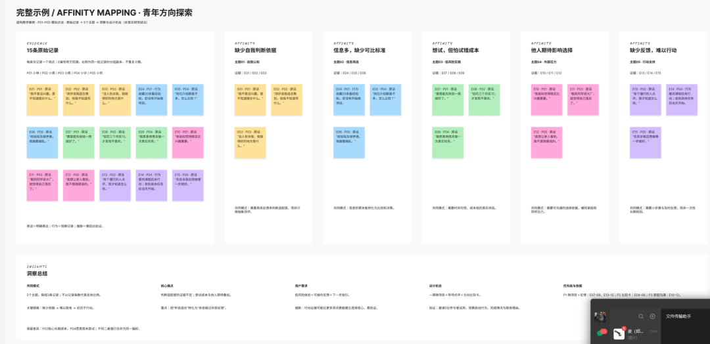
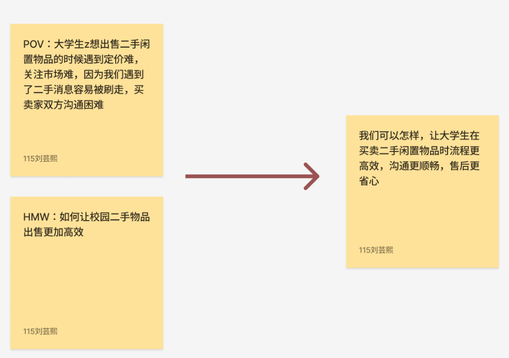
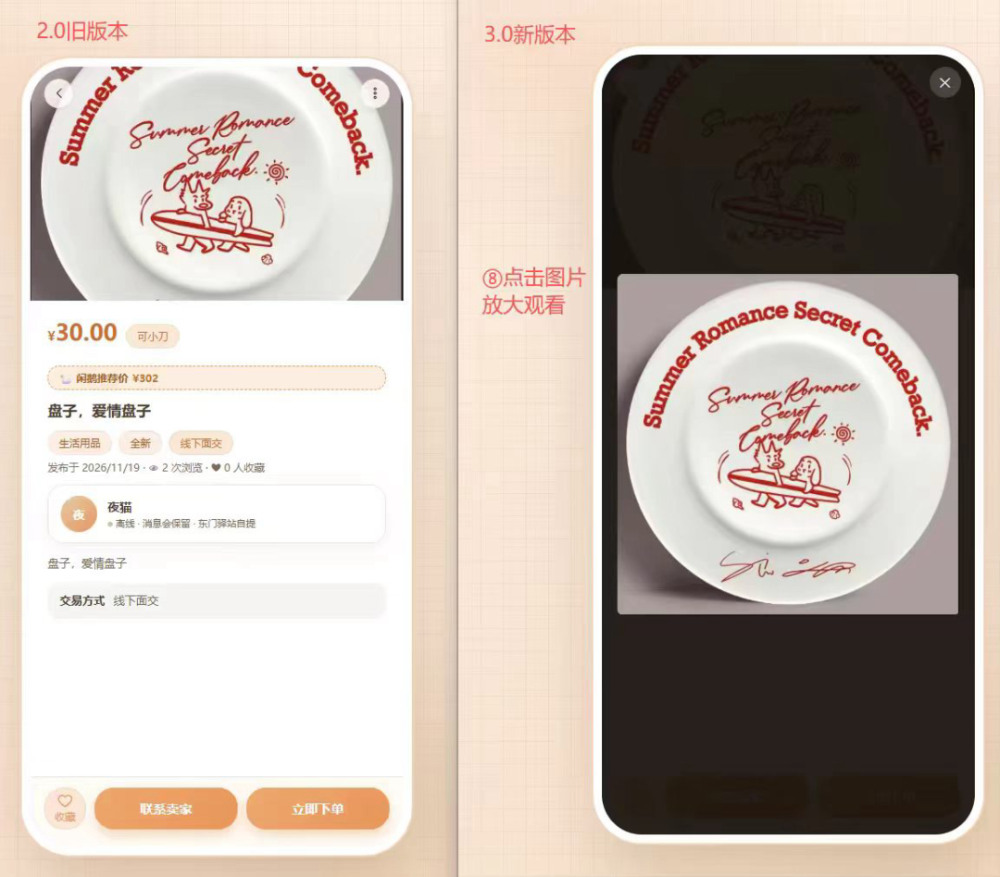
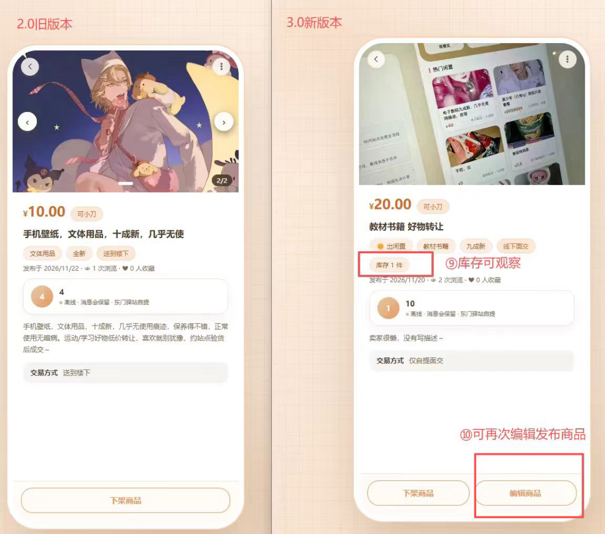

大平台赢在流量，输在「最后一公里」
物流与快递对几十块的旧教材太重；「今天下午顺路拿到」才是校园高频场景。
这是「闲鹅」——一个面向大学生的校园二手闲置平台——从最初的想法，到团队讨论、问卷访谈， 再到网页与 App 落地、真实测试与2.0 → 3.0 升级的完整过程记录。 我们想把「定价难、消息被刷走、沟通费劲」这些买卖二手时真实的坎，一个个搬走。

每个宿舍角落都堆着「懒得卖」的东西：教材、台灯、小家电。不是不想卖，而是 定价没参照、消息被刷走、和陌生人沟通太费劲。我们把这些原话写成 POV，再转成 HMW。
来自宿舍夜谈的真实抱怨，也是问卷里被提到最多的痛点。
熟人渠道有信任，但信息无法沉淀、无法检索。
大平台解决「买得到」，却没解决「今天下午顺路拿到」。
讨论从三件事开始：竞品到底解决了哪一段、问卷该怎么问、别人已经做到了哪里。 工具的目的不是收集答案，而是尽快排除错误的假设。
| 比较维度Dimension | 直接竞品Direct · 闲鱼 | 间接竞品Indirect · 微信群 / 朋友圈 | 替代方案Alternative · 扔掉 / 送人 |
|---|---|---|---|
| 产品名称Name | 闲鱼 · 二手市场 | 校园微信群 / 朋友圈 | 闲置堆放 · 送人 |
| 目标用户Who | 有二手交易需求的泛用户，规模大但人群杂 | 同校同学、熟人圈层 | 有闲置处理需求的个人 |
| 核心问题Pain Point | 校园场景覆盖弱：几十块的旧教材走快递不划算，定价无参考、陌生人信任成本高 | 信息易刷走、无法沉淀与检索，约面交全靠运气，没有担保 | 卖不出价值，堆着占地方，最后只能扔 |
| 关键流程User Flow |
|
|
|
| 做得好Good | 品类全、规模化，有验货担保机制，用户基数大 | 熟人信任是现成的，沟通直接，无平台费用 | 零成本、即刻解决 |
| 不足Deficiency | 物流成本高、同城面交效率低，买卖双方沟通与售后费劲 | 信息不可沉淀、不可检索、无担保，容易被广告刷屏 | 价值归零，没有交易闭环 |
| 待验证的设计机会Opportunity | 校内身份轻认证能否降低信任成本？驿站自提能否取代快递走完「最后一公里」？AI 参考价能否解决「定价难」？ | ||
先写清楚你做的产品、目标用户和核心问题。别急着找竞品。
记住：竞品不一定是一项产品——相似产品是直接竞品，相同需求不同方式是间接竞品，用户手动替代是替代方案。
按用户、问题、流程、好与不足逐行拆，不要只罗列功能。
每个格子都标注「待验证的设计机会」，对比的终点是判断。
| 错误类型 | 常见写法 ✗ | 改进写法 ✓ |
|---|---|---|
| 只看功能，不看策略 | 整个表格都在罗列竞品有什么功能 | 标注每项功能背后要达成的目标 |
| 只做对比，不做判断 | 把「谁更好」写成小作文 | 用「做得好 / 不足 / 机会」三栏下结论 |
由调研板「竞品分析模板 + 竞品对比表」重建为网页表格，非截图。
每周几次？了解使用强度——过去【1 周】内，有几次【浏览 / 发布闲置】？
限定时间范围——最近【1 个月】里，【搜寻闲置】几次？
判断态度强度——你觉得【闲置定价难】问题严重吗？（1–5 分）
比较参照系——和【其他二手渠道】比，你满意度打几分？（1–5 分）
调研样本：问卷 210–220 份，覆盖不同年级、不同院系；深度访谈 8–10 人，线上 + 线下结合。
分析要点：问卷看集中度与分布，访谈看动机与语境——两路证据交叉验证，别用一个问题下结论。
| 坑 | 常见写法 ✗ | 改进写法 ✓ |
|---|---|---|
| 一题问两件事 | 「发布 & 沟通 & 你会觉得麻烦吗？」 | 拆开问：发布麻烦吗？沟通麻烦吗？ |
| 选项不周全 | 「使用频率：1–3 / 3–5 / 5 次以上」（漏了 0 次） | 加「0 次」，覆盖不使用者 |
| 带倾向的选项 | 「它是非常好用还是太难用？」（暗示难用） | 改中性：使用中经常遇到哪些问题？ |
| 问未来不问过去 | 「以后会经常用这个 App 吗？」 | 问真实行为：你最近一次没买成的东西是什么？ |
一题一问
一个问题，只问一件事
选项周全
不重叠、覆盖所有情况，留「其他」
保持中立
不暗示答案，不带预设判断
真问具体
问真实发生的事，不问想象
100 份不等于全校的代表性——实训题：问卷到底发给了谁？
只在社群发问卷，结果更能代表「活跃的那群人」。
「点外卖多的同学不太去第一饭堂」不构成结论。
30 人没回答的题，可能是问题模糊、羞于开口，别直接计入平均。
由调研板「问卷话术模板（两页）+ 执行计划」重建为网页内容，非截图。

讨论板：成员各自提出想法（AI 想法 / 落地的现实项目），并研究了 Gali（资金托管 + 固定点位当面验货）、校闲荟（小程序担保 + 纠纷仲裁）、咸鱼 AI（拍照识别生成标题描述）三个现实项目。
物流与快递对几十块的旧教材太重；「今天下午顺路拿到」才是校园高频场景。
微信群消息无法沉淀、不可检索、没有担保；信任是现成的，缺的是工具。
学号认证建立信任，驿站自提顺路交付，AI 识别降低发布成本——三者叠起来才成立。
用户旅程地图还原一个人的语境，亲和图找出多数人的共性——每条设计决策都能对应回某张便签。

用户旅程地图：以「小陈 · 20 岁 · 在校大学生」为原型，从找东西、联系对方、沟通价格、付款、等待物流到收货检查，逐段标注想法 / 行为 / 接触点 / 问题 / 情绪 / 机会。
由调研板「EMPATHY MAP 工作稿」重建为网页卡片（六张受访者地图的结构与共性内容），非截图。

亲和图：100+ 条问卷与访谈原话逐条编码（P01–P25+），聚成 7 组主题——从「价格预期」到「信用与保障」，再收敛出核心痛点与用户需求。

方法校准：先做一次小样本演练（15 条原话 → 5 组主题），统一编码规则后再上全量数据。

从亲和图中挑出最高频的一簇，重新写成 POV 与 HMW，作为功能优先级的裁判。
依据洞察搭出产品骨架：五大模块覆盖「逛 → 搜 → 发 → 聊 → 管」全流程， AI 负责降低发布门槛，驿站自提负责解决交付。

上传照片自动识别物品、生成标签与描述，也可手动修改；定价给出「闲鹅推荐价」做参照。
在线习惯与交易偏好进档案，为相似用户匹配做铺垫；回夏速度、常在线时段可选。
商品标注「东门驿站自提 / 送到楼下」，卖家备注位置会展示给买家，交易方式一目了然。
2.0 上线给同学真实使用后，我们按反馈逐条修：左边是旧版本，右边是 3.0 新版本。 每一条改动都来自一个具体的吐槽。

编辑资料上线——2.0 里还是「功能开发中」，3.0 可以直接改头像、昵称、性别与个性签名。

把缺失的选项补齐——消息页空状态没退路，3.0 补上了完整底部导航。

我的页做减法——偏好档案、相似匹配等复杂设置收起，页面更清爽、退出登录更明确。

广场更好逛——新增「我的点赞 / 我的收藏」、表情评论、图片点击放大。
分类移到首页——新增推荐 / 最新发布 / 热门商品与筛选，热门闲置不再一屏刷到底。

图片放大观看——详情页图片支持全屏查看，成色细节看得清再下单。

发布更完整——新增「出闲置 / 收闲置」类型与库存设置（卖出自动减、0 件自动下架）。

库存可观察 + 可再编辑——详情展示库存件数；卖家可以随时重新编辑已发布的商品。
调研里出现频率最高、但我们还没来得及做完的事，排进了 3.1 的清单。